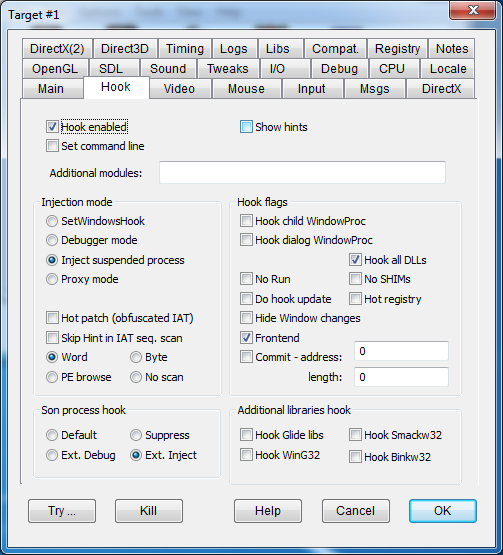

|
Hook enabled |
HOOKENABLED |
If this flag is not set, DxWnd ignores the task - see gray icon |
|
Show hints |
SHOWHINTS |
This option activates message boxes that contain information about what DxWnd finds in a program's executable. It can't tell you exactly how to configure that program's hook, but can be helpful in determining which settings you may need to adjust. |
|
Set command line |
SETCMDLINE |
DxWnd can run a controlled task from the GUI. When this happens (either by double-clicking on the task icon, ot through the Run command or in any other way) DxWnd choses a command line for the task to be passed to the CreateProcess system call. By default, the command line has a NULL value that pleases most programs but not all of them. In certain cases the task makes a check on the argument line and behaves differently, as for instance many Lucas Arts games of the Star Wars serie, that in turn run the setup frontend in the case of NULL command line. This flag replaces the NULL command line with the program pathname. It should be noted that other programs bewave the other way round, requirin a NULL command line to work properly, hence the need of a configuration flag. |
|
Additional modules: |
DxWnd's hooking logic may not notice some DLLs. In these fortunately rare cases, you can fix the issue by entering one or more module names to be added to DxWnd's search algorithm. |
|
SetWindowsHook |
A SetWindowsHook callback handles the injection by intercepting the creation of the first program window. It is the default DxWnd hooking schema, allowing the program to run independently from the DxWnd interface. The drawback is that the window may only be created after some operation that needed to be fixed and DxWnd will be unable to completely intercept the program's execution, resulting in some odd behaviors from the program. |
|
|
Debugger mode |
STARTDEBUG |
This basic hook technique intercepts the first window creation event. By this point, the program may have taken unwanted actions already, such as changing the video mode, detecting bad conditions, or crashing. Checking this flag injects DxWnd's logic right at the beginning of task execution, allowing DxWnd to intercept all events. The drawback is that this only works when the task is activated from the DxWnd interface (indicated by a yellow icon; see The Interface). Another drawback is that the injection process closely resembles the activation of a debugger, which some games will detect and intercept, shutting down the program. |
|
Inject suspended process |
INJECTSUSPENDED |
This hook technique is similar to the "Debugger mode" above, but does not involve debugging, allowing greater compatibility with some programs that might block that more complex method. This settings works well on Windows XP. |
|
Proxy mode |
INJECTPROXY |
This hook technique is based on system library proxies. DxWnd will copy all proxy dll files from its proxy folder to the target program folder and will monitor the task execution so that each copied dll will be automatically deleted at the end of the task execution. The proxies are instrumented with code that handles the concurrency between different dll files, so loading more than one dll will give no harm. In addition, the proxy dll will take the target's configuration directly from the DxWnd shared memory table. This method is propedeutic to building and testing a standalone proxy configuration that may work without DxWnd frontend. |
|
Hot patch (obfuscated IAT) |
HOTPATCH |
The original DxWnd used IAT patching to redirect API calls to the altered routines. This method has its advantages, but fails when not all API are reached because they are located in unconnected dlls, referenced by ordinal number or referenced by programs with obfuscated IAT. IAT obfuscation is a sophisticated but common enough technique to make hacker's life harder: for instance, the game executable of Doom III has an obfuscated IAT. Checking this flag cause DxWnd to use an alternate patching technique, that is the "hot patching" that creates a detour assembly code right at the beginning of the API implementation. Once done EVERY SINGLE CALL gets intercepted no matter from where the call is made, but it isn't always possible to apply this technique. Luckily, in the vast majority of cases, they both work. |
|
Skip Hint in IAT seq. scan |
SKIPIATHINT |
Fixes "The Black Mirror" hooking problems. |
|
Word |
IATWORDALIGNED |
The default method. Procedure names are searched through the OFT pointers and, in case there are no pointers available, names are searched sequentially assuming that they are null padded to be aligned to a word boundary (2 bytes). It works in most cases. Beware: this mode is incompatible with sos95nn.dll midi libraries and causes the game crash. Better avoid this setting in case a sos (Sound Operating System) library is linked or loaded. |
|
Byte |
IATBYTEALIGNED |
IAT Same as "Word" method, but navigation schema for IAT with no OFT indication assumes that names are aligned at byte boundary with no null padding. It works for instance on several old Sierra games. |
|
PE browse |
PEFILEHOOK |
Scan method that retrieves information from the PE header on the target modules (executable file and loaded dynamic libraries) directly on the file system, accessing information before that it is overwritten by the loader. It is a very powerful method, working in almost all cases, but with some overhead due to the file access. |
|
No scan |
NOIATSCAN |
Avoid hooking scrambled IAT - fixes games of Sierra Hoyle series. |
|
Default |
By default, DxWnd does not intercept the CreateProcess call and therefore does not automatically hook the program's children. To hook the program's children, use Edit > Add (see Edit) to create a new entry in the main program list for each child process. |
|
|
Suppress |
SUPPRESSCHILD |
This option bypasses calls to CreateProcess. Some games start annoying programs as child processes, for instance to play intro movies (like binplayer.exe that may cause desktop configuration changes) or open advertising html links. You can skip these operations by activating this flag. |
|
Extend Debug |
DEBUGSON |
This option automatically hooks any created child processes with the "Debug" hook mode. |
|
Extend Injection |
INJECTSON |
This option automatically hooks any created child processes with the "Inject" hook mode. |
|
Hook child WindowProc |
HOOKCHILDWIN |
By default, DxWnd intercepts the WindowProc routine of the main window, and this is enough for its purposes. In some cases, though, this is not enough and this flag tells DxWnd to intercept and redirect the WindowProc routines of all child windows as well. |
|
Hook dialog WindowProc |
HOOKDLGWIN |
Same as abowe but for dialog windows. |
|
No Run |
HOOKNORUN |
Some applications run several executables. The only game found to run like this so far is Die Hard Trilogy. It has a frontend program that runs one choice of three different executables, each one implementing one single, unique game. In this situation, each individual game needs an individual DxWnd configuration entry, and also needs to be run by the frontend. They cannot be run directly. The "No Run" flag and the corresponding blocking icon prevent the user from trying to run the game from the DxWnd interface. |
|
Do hook update |
HOOKDOUPDATE |
Under certain conditions, the same API or method call may have different memory addresses while the program is running. Unfortunately, there is no universal policy to handle this situation: in some cases, the program only works correctly if the function's original address is updated; in other cases, it is better to stick to the original value. By default, the original address is not updated. Check this flag to allow the update of the initial original address instead. |
|
Hook all DLLs |
HOOKDLLS |
The original DxWnd behaviour was limited to search & hook calls made by the main program directly. Checking this flag cause DxWnd to recurse in all non-system DLLs address space to hook calls there. It's necessary in all cases where the graphic engine is not directly coded in the program, but it's implemented in a separated engine DLL. |
|
No SHIMs |
COPYNOSHIMS |
This flag is useful in those cases where the program should also be used without DxWnd control and with its original shims, so that it is not possible to clear the shims for it. Also, it should be used in cases where the user doesn't have administrator privileges and can't permanently disable the shims. Users should be aware that copying an executable on the fly could get interferences from antivirus and such programs, so the operation could temporarily or permanently fail. In that case, it is possible to retry or to manually do the operation by copying the exe file, updating the path field correspondingly and turning the "No Shims" flag off. |
|
Hot registry |
HOTREGISTRY |
Force hooking & logging of all registry operations (experimental). |
|
Frontend |
FRONTEND |
Some games need to be run by a frontend program that is not possible to emulate somehow else, and this frontend doesn't like being hooked in a generalized way. This option enables only the hooking of the CreateProcess calls so that the frontend has the minimum impact by the hooking operations but we ensure that the launched son processes are surely hooked with early injection modes like "Debug" or "Inject" mode. It should be noted that enabling this option DxWnd only considers the logging flags plus the Son Process Hook flags (to set the son hooking mode), while all other flags are ignored. Beware: the option works with forntends based on CreateProcess-type calls, does not work yet with ShellExecute-type methods or others. |
|
Commit |
COMMITPAGE |
This flag makes the GUI to commit a memory area before injecting the target program. After the injection the memory is immediately uncommitted. So far, this complex trick seems necessary in a single case, namely "South Park XP patch", a cleverly patched executable for South Park that made this Win98 game compatible with WinXP platform. The problem with DxWnd is that the game relies on the availability of a memory area at address 0x10010000 and length 8000000 where to store the content of the texture file. Unfortunately this area is where dxwnd.dll is mapped by default, so that running the game with dxwnd control makes it crashing. The workaround is making dxwnd.exe to commit (through a VirtualAlloc(MEM_COMMIT) call) that area just before injecting dxwnd.dll so that the dxwnd module is loaded elsewhere, then uncommit the area so that the game can find it available. The flag works only with early hook modes (Debug and Inject suspended), it can't work with default WindowsHook mode because it would be too late. When the flag is set, the edit boxes to the right define the committed memory address and length. Be aware that these fields hold decimal values, so that a hex value like 0x10010000 must be converted to decimal as 268500992. |
|
Hook Glide libs |
HOOKGLIDE |
Enables Glide API hooking. NOTE: Dxwnd does not have a build-in Glide wrapper but nGlide seems to work quite well with Dxwnd. TIP: If you are using nGlide try also changing the DirectX Version hook to DirectX9. |
|
Hook WinG32 |
HOOKWING32 |
For hooking of games that use the WinG32 library. |
|
Hook Smackw32 |
HOOKSMACKW32 |
Hooks Smackw32 to avoid tight looping, allowing debugging, tracing, and future expansions. When this flag is active, the SmackOpen call activates a thread that ensures that all frames are refreshed to the screen (similar to the "Auto Primary Surface Blit" option in DirectDraw Surface Handling). |
|
Hook Binkw32 |
HOOKBINKW32 |
Same as abowe but for Binkw32 videos. |